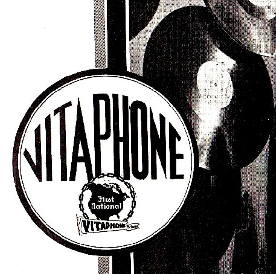

An overview of world cinema(s) as technology, commodity, and cultural form from cinema’s birth till the rise of television in the 1960s. The course focuses on fictional, live-action, narrative cinema but also examines documentary, animated and experimental films through the concepts of genre, authorship, race, sexuality, gender, and spectatorship.

Schedule of Assignments
Open a PDF file link